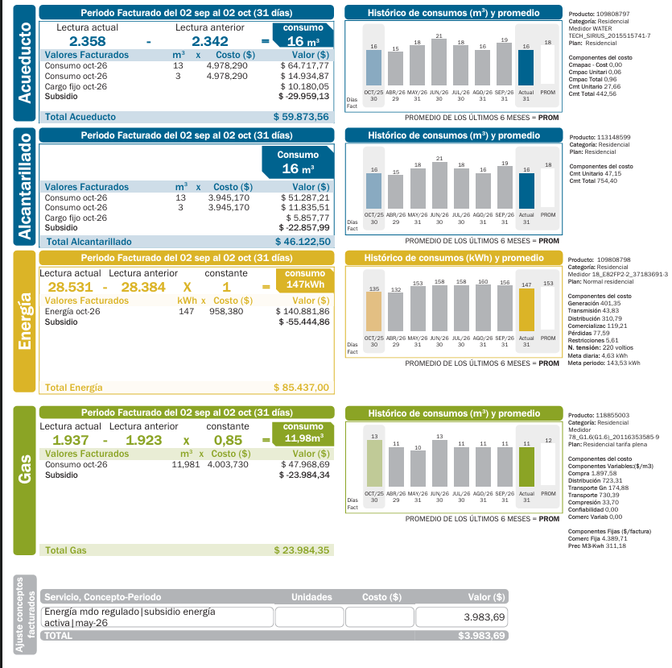

La factura de energía
147
kWh consumidos en el mes
958,38
COP por kWh (tarifa)
$ 85.437
total de energía con subsidio
102 %
de mi meta de 143,53 kWh

| Concepto | Valor |
|---|---|
| Consumo del mes | 147 kWh |
| Tarifa | 958,38 COP por kWh |
| Valor de la energía (147 × 958,38) | $ 140.881,86 |
| Subsidio (estrato 2) | $ -55.444,86 |
| Total energía | $ 85.437,00 |
Con el subsidio pago unos 581 COP por kWh (85.437 ÷ 147). La meta de mi factura es de 143,53 kWh (4,63 kWh por día) y consumí el 102 % de esa meta: no recibo incentivo (menos del 90 %), pero tampoco recargo (más del 110 %).
Historial de consumo
| Mes | Consumo (kWh) | Valor pagado (COP) |
|---|---|---|
| Octubre de 2025 | 135 | 78.463 |
| Abril de 2026 | 132 | 76.719 |
| Mayo de 2026 | 153 | 88.924 |
| Junio de 2026 | 158 | 91.830 |
| Julio de 2026 | 158 | 91.830 |
| Agosto de 2026 | 160 | 92.993 |
| Septiembre de 2026 | 156 | 90.668 |
| Octubre de 2026 (actual) | 147 | 85.437 |
| Promedio de los últimos 6 meses | 153 | 88.924 |
La factura solo muestra los kWh de cada mes. El valor pagado de octubre de 2026 es el real; el de los demás meses lo estimé multiplicando los kWh por 581,20 COP, la tarifa neta de este mes. Es una aproximación, porque la tarifa cambió durante el año.
Equipos frente a la factura
| Concepto | kWh | Costo con la tarifa de 958,38 (COP) |
|---|---|---|
| Proyección de mis 5 equipos (17,083 kWh por semana × 31 ÷ 7) | 75,65 | 72.502 |
| Consumo de la factura | 147 | 140.882 |
| Diferencia sin explicar | 71,35 | 68.380 |
Mis cinco equipos explican cerca del 51 % del consumo de la factura; el otro 49 % (71 kWh) no lo explican. Creo que hay tres razones:
- No registré todos los equipos de la casa: la iluminación, el televisor, el computador, los cargadores y el ventilador también consumen.
- Las horas de uso de la tabla son estimadas, y es probable que use los equipos más tiempo del que calculé.
- La etiqueta de la nevera da el consumo en condiciones de prueba; en la casa puede ser mayor por el calor, las veces que se abre la puerta y el estado del empaque.
Recomendaciones de ahorro para mi familia
- Bajar de 129 kWh al mes para recibir el incentivo. Hoy consumo 147 kWh y la meta es de 143,53 kWh. Para pasar del 90 % de la meta debo ahorrar unos 18 kWh al mes, o sea unos 4 kWh por semana.
- Usar menos la airfryer. Con 1450 W es el equipo que más gasta por hora. Si la uso 15 minutos menos de lunes a viernes, ahorro unos 8 kWh al mes. Conviene llenar la canasta y no dejarla prendida en vacío.
- Cuidar la nevera. Gasta el 41 % de lo que calculé para mis equipos porque nunca se apaga. Debo revisar que la puerta cierre bien, no meter comida caliente y dejarla lejos de la estufa.
- Desconectar lo que no se usa. La sandwichera, la licuadora, la waflera, el televisor y los cargadores deben quedar desenchufados, como pide el mensaje de EPM en la factura.
- Hacer una lista de todos los equipos. Para entender los 71 kWh que no explico, voy a anotar la potencia y las horas de los equipos que faltan y revisar el consumo cada semana en el medidor.